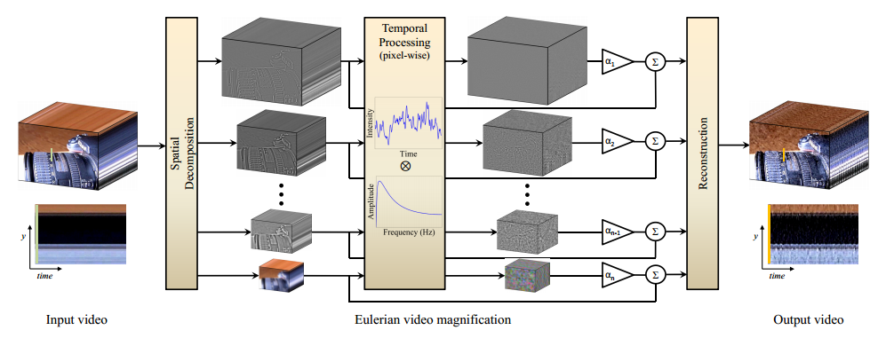

GI View · Imaging · Algorithms
Camera Visualization — Resolution & Color Accuracy
Color accuracy in a colonoscopy camera isn't an aesthetic concern — it directly affects how reliably a physician can identify tissue abnormalities. I made that clinical case visible, got the project approved, and owned it fully from there.
Taught myself color science and sensor physics from scratch — this was the one place it was unavoidable — and worked with an external algorithm consultant to build a per-camera calibration system. Became the company's sole expert on camera, optics, and imaging quality.
Taught myself color science and sensor physics from scratch — this was the one place it was unavoidable — and worked with an external algorithm consultant to build a per-camera calibration system. Became the company's sole expert on camera, optics, and imaging quality.
Passed FDA color requirements. Resolution +12.2%, color-accuracy error cut 11× (20 → 1.8).
Clinical framing · Influencing without authority · Image processing · Optical systems · MATLAB / Python

Tel Aviv University · Imaging · ML
Cell Migration Analysis — Image Processing Pipeline
Quantifying how cells change shape over time as they respond to a stimulus sounds straightforward until you try to do it systematically across hundreds of images. I built an automated pipeline in MATLAB — segmentation, contrast correction, background normalization, and denoising — that removed manual measurement from the process entirely and enabled consistent morphological tracking across timepoints.
A contained project, but a clear example of how I approach analytical problems: define what you're measuring, build the tool, remove the variability.
A contained project, but a clear example of how I approach analytical problems: define what you're measuring, build the tool, remove the variability.
Automated cell morphology quantification across exposure timepoints.
MATLAB · Image segmentation · Cell biology · Signal processing
Full presentation slides →

Tel Aviv University · Computer vision · Lab
Eulerian Video Magnification — Amplifying Subtle Motion in Video
Laboratory project on Eulerian video magnification: amplifying tiny temporal changes in ordinary video—pulse, respiration, small displacements—without special sensors, by combining spatial and bandpass temporal filtering. Covered algorithm choices, parameter sensitivity, and validation on controlled sequences.
Documented methodology, results, and limitations in a full technical lab report.
Documented methodology, results, and limitations in a full technical lab report.
End-to-end EVM implementation with written lab report and validation narrative.
Video analysis · Signal processing · MATLAB · Scientific reporting
Lab report (PDF) →